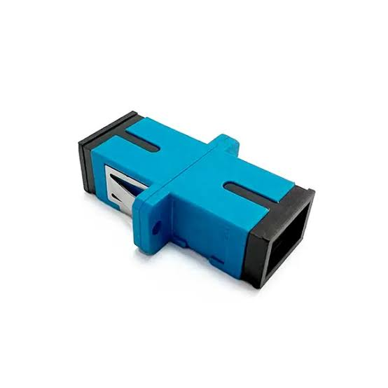
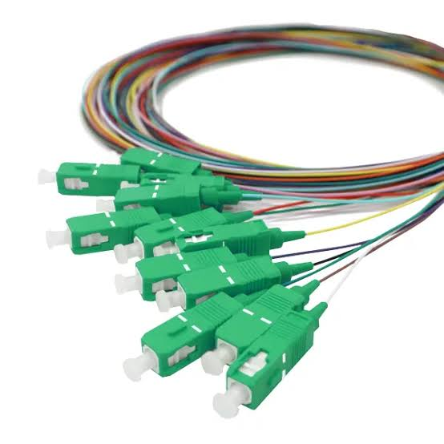
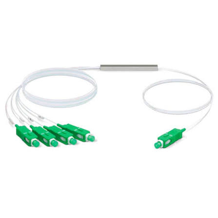
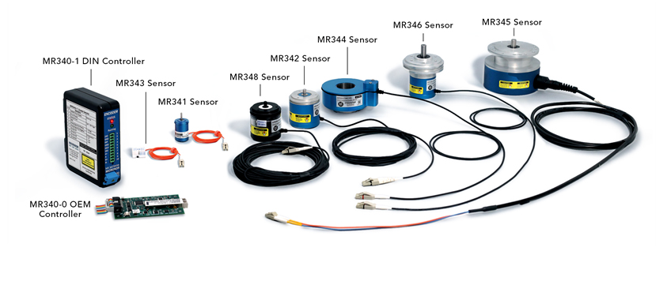

Dispositivos
Los principales dispositivos utilizados en fibra óptica son:
- Cables de fibra óptica

- Conectores para unir cables

- Acopladores

- Pigtails (cables con un extremo preparado para empalmar)

- Splitters, que dividen una señal en varias

- Sensores de fibra óptica para medir temperatura, presión o vibraciones

Volver al inicio